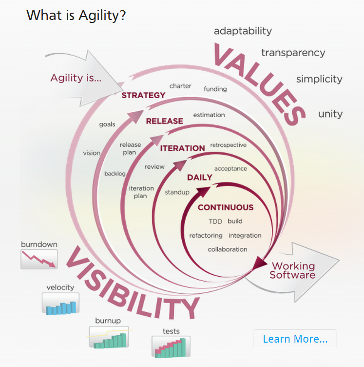
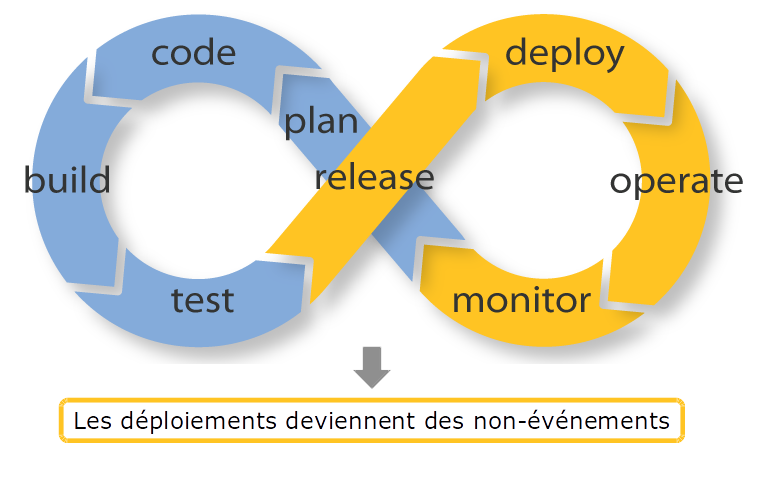
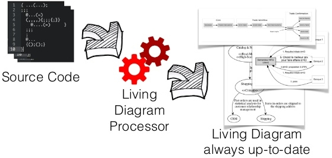
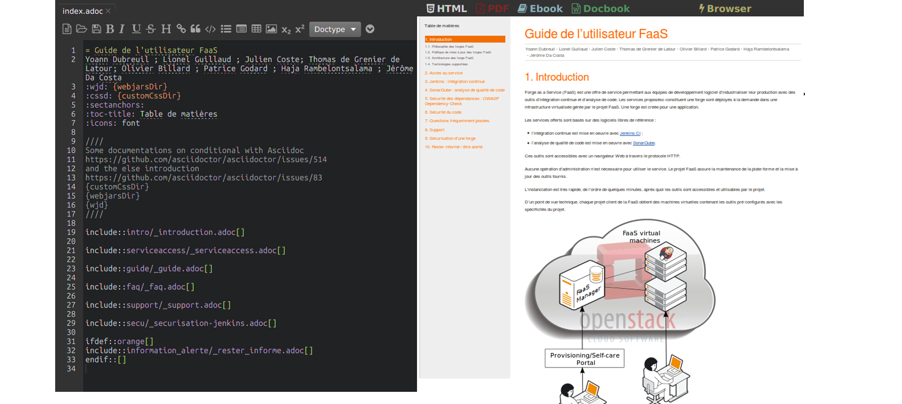
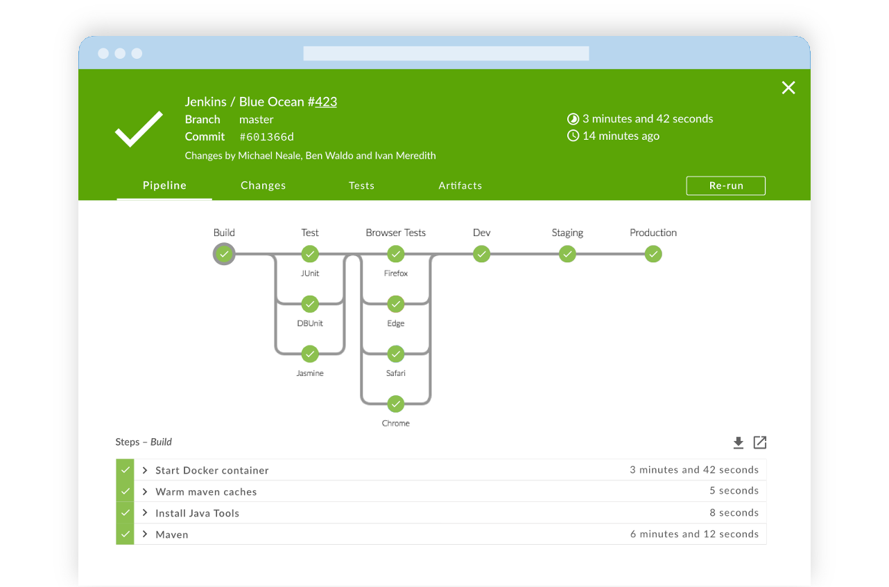
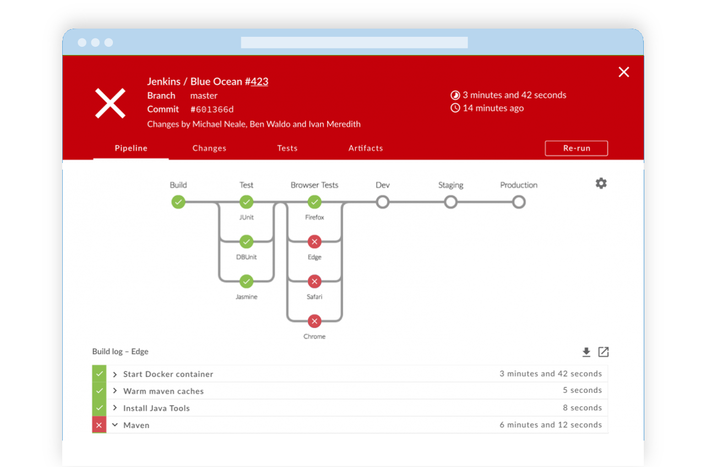

Mon équipe se focalise sur
la valeur métier
... grâce au code
< nous />
Il était une fois
Une équipe réalisant du logiciel
Qui voulait livrer de la valeur métier
aussi fréquemmentque possible
Chapitre 0
Le roi est mort
Cycle en V avant 1995 ...
- Livraisons tous les ~ 2 ans
- Avec + ou - de succès
Problème ...
- Innovation
- Incertitudes métiers
- Incertitudes techniques
- Marché évoluant de + en + vite
- Obsolescence des besoins initiaux
... Solution
XP ou Scrum à la rescousse
- Découpage des besoins
- En usage métiers indépendants
- Livraisons fréquentes
- Validation continue
- Repriorisation continue
Chapitre I
pas si facile de détroner le roi
Recette
- Comment faire une recette d’un mois…
- …toutes les 2 semaines
Automatisation des tests !
- Gain de temps
- Reproductible
D'autres problèmes lors des livraisons


"Ça marche si je livre depuis mon poste !"
Industrialisation (XP)
- Gestion de source
- Automatisation du build
- Depuis la gestion de source
- Sur un serveur neutre
Bénéfices
- Livraison plus facile = livraisons plus fréquentes
- Plus fiable = plus de temps consacré à la valeur métier
1995 : Youpi !
- Livraison de valeur métier
- Passe de 2 ans à 2 semaines !
Chapitre II
Un nouveau roi, de nouveaux problèmes
Livrer à la fin de chaque itération
- Tout ce qui marche
- Rien que ce qui marche
Cohérence du livrable ?
- Quel code ?
- Quel schéma de BDD ?
Réunir !
- Branche de code pour chaque fonctionnalité métier
- Inclure avec le code tout ce qui est nécessaire à son bon fonctionnement
- Code de l'application
- Scripts de mise à jour de la BDD
Bénéfices
- Meilleure interaction dev/ops
- Cohérent
- Reproductible
Chapitre III
Remise en question du nouveau roi
2 semaines ?
- Anomalie urgente en production
- Fonctionnalité validée en cours d'itération
- Pourquoi attendre 2 semaines ???
- Spotify, GAFA, NATU, ...
Enjeu
- Reproduire
- Le succès 2 ans -> 2 semaines
- En succès 2 semaines -> 2 heures
Solutions
- Métier
- Kanban
- Technique
- ?
1 semaine pour créer un environnement de test
Environnement de dév. différent de la prod.
- Quelles dépendances installées ?
- Dans quelles versions ?
- etc
Outils de provisionning
- Fichier décrivant l'environnement cible
- Simple déclaration
- Applicable automatiquement sur un serveur
- Présent avec le code dans la branche de gestion de version
- Cohérence
Bénéfices
- Gain de temps énorme
- Meilleure interaction dev/ops
- Cohérent avec le code
- Reproductible : moins d'erreur
- Traçable : historisation
2010 : Youpi !
- Livraison de valeur métier
- Passe de 2 semaines à 2 heures !

The end

Épilogue
Morale de l'histoire
Ce qu'on a vu
- Sujets variés
- Bénéfices proches
- Gain de temps
- Déterminismes
- …
Sens de l'Histoire
- Besoins de feedbacks
- De : projet d'un seul bloc
- Vers : projet en petits blocs
- Implique : itérations et incréments
- Implique : Répétition des tâches
- Besoins de répétabilité
Boucle d'apprentissage
Boucle d'apprentissage
Sens de l'Histoire
- Répétition des tâches
- Implique : Automatisation
- Implique : Code
Bénéfices rencontrés dans l'histoire ?
- Les bénéfices intrinsèques au code !
De plus en plus de code pour plus d'impact métier
- Exemple
- Le changement stratégique des outils Microsoft
Pratiques basées sur le code ?
2 axes de lectures
- Quels sont leurs bénéfices communs ?
- Quelles sont ces pratiques ?
Code ?
- Fichier texte
- Langages éxécutables, au sens large
- Langages de programmation
- Langages déclaratifs
Specification As Code
From Specification By Example by Gojko Adzic.
Documentation as code
- Living Documentation
- Fait partie des spécifications exécutables
- Markdown
- Asciidoc
- Swagger
Living Documentation

From https://leanpub.com/livingdocumentationby Cyrille Martraire
Living Documentation
From https://leanpub.com/livingdocumentationby Cyrille Martraire
Markdown

From https://mastercaweb.u-strasbg.fr/rediger-web-markdown/
Asciidoc
Swagger

Bénéfices du code
Communs à toutes les pratiques
directement ou indirectement,
tout bénéfice se traduit
en gain de temps
- Automatisation
- La 1ère fois coûte plus cher
- Les suivantes sont quasi gratuites
- Plus rapide = plus souvent = plus de feedback
- Permet de passer à l'échelle
- Attention à garder la maitrise !
- Pas d’automatisation
- Installer à la main chaque machine virtuelle
- “Automatisation” sans code
- Installer à la main
- En faire une image copie
- Utiliser cette copie pour chaque nouvelle installation
- Problème
- Changement incompatible (changement d’OS, etc) =>
- Comment on avait installé la première VM déjà ?
- Automatisation par le code
- Provisionning par fichier
- Puppet, ansible, saltstack, …
- Docker
- Provisionning par fichier
- Autonomation
- Ne pas remplacer l'humain
- Faire des super-humains
Les ordinateurs sont bêtes
Et ça, c'est bien
Un ordinateur
- Ça fait exactement ce qu’on lui dit
- Mais il faut être précis
- Sinon
syntax error
- Un humain, c’est intelligent ou inattendu
- Ambigüité ?
- Il corrigera parfois le tir, en bien ou en mal
- Pas d'ambiguïté ?
- Il ne le suivra peut être pas
- À tort ou à raison
- Il ne nous préviendra pas forcément
- “C’est évident !”
- “J'ai oublié de te dire, mais ...”
- Ambigüité ?
Le code documente
Véracité des informations
- Doc sujet à interprétation, le code non
- Un document peut être erroné
- Il est écrit qu’il faut faire A puis B
- “Ah oui? Je ne regarde plus.”
- “En fait non, maintenant il faut faire dans l’autre sens”
- Le code ne ment pas
- Si le script de déploiement fait A puis B, alors l'ordi fait A puis B
Pérénité des informations
- Anecdote
- Mise en place d’un environnement de dev pour firmware de clavier
- Tous les 2 ans
- J’oubli !
- Dockerfile à la rescousse
- https://github.com/gcollic/Grimoire60_keyboard/blob/master/firmware/Dockerfile
- La documentation sous forme papier
- Est vite obsolète ou côute cher à maintenir pour ne pas l’être
- Attention
- Un code crade n’a jamais rien documenté !
- Les pratiques “As Code” suppose du code clair et lisible !
- Bien choisir ces outils
- Les pratiques de clean code s’appliquent !
- Le code est versionnable
- Intégration métier de A à Z
- Si on travail sur les fonctionnalités A et B
- Quand A est finie et validée, mais pas B, il faut tout mettre à jour pour que sur la version courante tout soit cohérent
- Code de l’application
- Schéma de la base de donnée
- Test unitaires
- Autres tests
- Documentation technique
- Documentation métier (spécifications)
- etc, etc
- Si tout est sous forme textuelle, dans la même gestion de source, il suffit de fusionner les branches et tout est alors cohérent et à jour
- Pull-request
- Cherry-picking
- Auditabilité des informations
- Permet de savoir exactement au fil du temps comment fonctionnait les choses
- Le code est déterministe
- À contexte identique, l’ordinateur refera tout le temps la même chose
- Astuce : rendre le contexte le plus déterministe possible
- Fixer les dépendances
- Exemple NPM et/ou github
- Fixer les dépendances
- Astuce : rendre le contexte le plus déterministe possible
- Modularité
- C’est l’automatisation d’éléments de base qui nous a permis d’aller plus loin
- Et qui nous permettra d’aller encore plus loin
- Exemple de la chaîne de déploiement
- Automatisation de
- la compilation
- le déploiement
- l’installation des pré-requis sur la machine virtuelle
- la création de la machine virtuelle
- la mise en place de l’infrastructure complète
- Et demain ?
- Automatisation de
- Sum up
- Gain de temps
- Informations
- Partageables
- Véridiques
- Pérennes
- Auditables
- Déterministe
- Fusionnables et livrables par incréments cohérents
- Pourquoi c’est important ?
- Se concentrer sur le métier
Pratiques basées sur le code
Du code partout ?
- Toutes les parties
- Spec
- Build
- Test
- Deliver
Spécification exécutables
Build pipeline As Code
- Build
- Chaîne de compilation
- Configuration d’un job de l’intégration continue !
- Jenkins et TFS/VSTS sont tous les 2 passé de modéle IHM vers As Code
- Configuration de la pipeline entière de l’intégration continue
- Tests unitaires
- Doc technique
- Swagger
- AsciiDoc
- Exemple de la doc GitHub
- Juste un dépôt git à coté !
- Super facile pour collaborer
- Tests intégrations
- Exemple : Xamarin Test Cloud
- Un scénario de test sur X devices du marché
- Exemple : Xamarin Test Cloud
- BDD
- Schéma et data d’initialisation as code
- ORM de plus en plus Code First
- ORM avec migrations automatique
- Liquibase, DACPAC, …
- Schéma et data d’initialisation as code
- Delivery
- Puppet, ansible, saltstack
- Docker
- Let’s encrypt
- Modélisation 3D
- OpenScad
- Image à prendre de ma présentation sur le sujet
- OpenScad
- Slides
- Source de la slide de la slide ;-)
Conclusion : 5 min
- Conclusion
- Moins de problèmes à gérer
- Moins de temps à passer sur les tâches répétitives
- Plus de % de temps à se concentrer sur la valeur métier !
- Chaque déploiement est une chance d’avoir du feedback
- Chaque fois qu’on peut faire un déploiement pour corriger qq chose, rajouter qq chose, mettre à jour qq chose c’est rajouter de la felxibilité (responsivity) pour toutes les parties prenantes
- => aller en prod dès le début pour Année -> mois -> semaine -> jour -> heure grace au As Code
- Yes we can (tout le monde peut coder ?)
- Merci ! Questions ?
- Liens vers contenu slides
- Rappel de nos noms
Intégration Continue
Intégration Continue
Intégration Continue
"As Code"
eats the World
- Specification As Code (BDD/ATDD)
- Documentation As Code
- Build Pipeline As Code
- Infrastructure As Code
- ...
ALL THE THINGS As Code
Infrastructure as code
- Puppet recipe
- Playbook ansible
- Dockerfile
- Docker compose file
Puppet
package { 'ssh' :
ensure => latest
}
file { 'sshd_config' :
path => '/etc/ssh/sshd_config',
owner => root,
group => root,
require => Package[ssh],
notify => Service[ssh],
...
}
service { 'ssh' :
ensure => running
}
From https://github.com/aestasit.
Puppet
package { 'ssh' :
ensure => latest
}
file { 'sshd_config' :
path => '/etc/ssh/sshd_config',
owner => root,
group => root,
require => Package[ssh],
notify => Service[ssh],
...
}
service { 'ssh' :
ensure => running
}
From https://github.com/aestasit.
Playbook ansible
---
- hosts: webservers
vars:
http_port: 80
max_clients: 200
remote_user: root
tasks:
- name: ensure apache is at the latest version
yum: name=httpd state=latest
- name: write the apache config file
template: src=/srv/httpd.j2 dest=/etc/httpd.conf
notify:
- restart apache
- name: ensure apache is running (and enable it at boot)
service: name=httpd state=started enabled=yes
handlers:
- name: restart apache
service: name=httpd state=restarted
Playbook ansible
---
- hosts: webservers
vars:
http_port: 80
max_clients: 200
remote_user: root
tasks:
- name: ensure apache is at the latest version
yum: name=httpd state=latest
- name: write the apache config file
template: src=/srv/httpd.j2 dest=/etc/httpd.conf
notify:
- restart apache
- name: ensure apache is running (and enable it at boot)
service: name=httpd state=started enabled=yes
handlers:
- name: restart apache
service: name=httpd state=restarted
Dockerfile
FROM java:8
ADD spring-petclinic /app
ENV M2_HOME /app
EXPOSE 8080
WORKDIR /app
RUN chmod a+x /app/mvnw
RUN ls /app/mvnw
RUN /bin/bash -c '/app/mvnw -e clean install spring-boot:repackage -DskipTests'
CMD /app/mvnw -e spring-boot:run -DskipTests
From https://github.com/aestasit.
Dockerfile
FROM java:8
ADD spring-petclinic /app
ENV M2_HOME /app
EXPOSE 8080
WORKDIR /app
RUN chmod a+x /app/mvnw
RUN ls /app/mvnw
RUN /bin/bash -c '/app/mvnw -e clean install spring-boot:repackage -DskipTests'
CMD /app/mvnw -e
spring-boot:run -DskipTests
From https://github.com/aestasit.
Dockerfile
FROM java:8
ADD spring-petclinic /app
ENV M2_HOME /app
EXPOSE 8080
WORKDIR /app
RUN chmod a+x /app/mvnw
RUN ls /app/mvnw
RUN /bin/bash -c '/app/mvnw -e clean install spring-boot:repackage -DskipTests'
CMD /app/mvnw -e spring-boot:run -DskipTests
From https://github.com/aestasit.
docker run -d my_bootiful_petclinic
Docker compose file
version: '2'
services:
elasticsearch:
build: elasticsearch/
...
ports:
- "9200:9200"
- "9300:9300"
logstash:
build: logstash/
...
ports:
- "5000:5000"
depends_on:
- elasticsearch
kibana:
build: kibana/
...
ports:
- "5601:5601"
depends_on:
- elasticsearch
Docker compose file
version: '2'
services:
elasticsearch:
build: elasticsearch/
...
ports:
- "9200:9200"
- "9300:9300"
logstash:
build: logstash/
...
ports:
- "5000:5000"
depends_on:
- elasticsearch
kibana:
build: kibana/
...
ports:
- "5601:5601"
depends_on:
- elasticsearch
Docker compose file
version: '2'
services:
elasticsearch:
build: elasticsearch/
...
ports:
- "9200:9200"
- "9300:9300"
logstash:
build: logstash/
...
ports:
- "5000:5000"
depends_on:
- elasticsearch
kibana:
build: kibana/
...
ports:
- "5601:5601"
depends_on:
- elasticsearch
Biz Dev Ops
What DevOps ?
CULTURE
MEASUREMENT
AUTOMATION
SHARING
- TDD
- * as Code
- * as Code
Questions ?
Hello Slides As Code
Titre
- Item 1
- Item 2
dis autrement